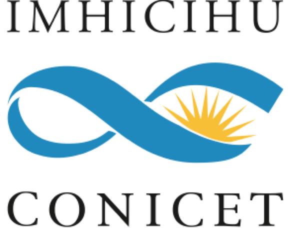

IMHICIHU - Enlaces
Un proyecto interno que solo tiene el objetivo de agrupar y visualizar nuestros desarrollos con diversas tecnologías y estrategias digitales.

Un proyecto interno que solo tiene el objetivo de agrupar y visualizar nuestros desarrollos con diversas tecnologías y estrategias digitales.